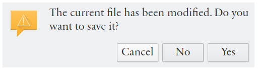

Table of Contents
The main window consists of six different views. When Eqonomize! is started, the accounts view is shown. To change view click on the corresponding icon in the horizontal list above.
 |
The first time you start Eqonomize! a predefined set of accounts and categories are already present. These can be considered an example or a starting point for a setup matching your own conditions. You can either begin by modifying the suggested accounts and categories or start from scratch with → (Ctrl+N).
Accounts should be created to match your real world bank accounts plus at least one account for cash. Categories are used to keep incomes and expenses better organised. Each transaction must be connected to an account and a category, or two accounts for transfers between accounts. To create accounts and categories use the menu or the context menu of accounts view. Accounts and categories can also be added as needed when entering new transactions. A monthly budget can be set for each separate category.
Now it is time to start recording transactions each time money have been deposited or withdrawn from one of you accounts. If you have kept book before, either on paper, or in another program, you can either import a file from another program (see Chapter 8, Import & Export of Transactions), enter each transaction manually by hand, or start from scratch (remember to enter the correct opening balance for each account).
Transactions can be entered in two ways, either using the new expense/income/transfer dialogs (where you have the option to create a recurring transaction), or from the transaction views. The latter option is usually preferred.
The first time you record an expense you should follow these steps:
Switch to the expenses view, using the top icons. The input focus is now in the description entry.
Type in a description for the expense. You are free to use the description property as you want, but I suggest you keep short and consistent without any inflections, as a final level of categorisation, for optimum efficiency and good statistics. For example, if you buy a delicious red Ingrid Marie apple and have an expense category for fruit, the description will be “Apple”, and if you want to record additional information put “Delicious red Ingrid Marie apple” as comment (others might find it more appropriate to use “Groceries” as category and “Fruit” as description). Press Enter or Tab and focus will move to the cost entry.
Enter what you paid. Note that the value should not be negative (except for refunds) and you do not need to type any currency. Press Enter or Tab.
Optionally enter a quantity (if you bought multiple apples). Note that the previously entered value is the total cost and independent of the quantity. This and the payee field can be hidden from the settings menu, if not used. Press Enter or Tab.
Select the date when the transaction occurred. To change the date, either write a valid date, select one from the pop-up calendar, or increment/decrement the current value with up/down keys. If you now press Enter, the new expense record will be created, but we do not want do that this time since the current account and category probably are not correct.
Select the correct account (where the money for the expense is taken from) and expense category from the drop-down lists on the right. (If you have not yet added the category and/or account, select or from the top list.)
Optionally enter a payee (the store where you bought the apple).
Optionally enter a comment (memo) for the expense.
Click or press Enter.
Note
Enter adds a transaction if pressed with input focus in the date or comment entry. Otherwise it moves input focus to the next entry.
Repeat the process to record another expense. When you enter the next (and all subsequent expenses) expense you can however usually do it more efficiently. Date, account and category will not be reset each time, so often you need at least not change account. More importantly Eqonomize! remembers the last expense entered for each unique description. When you enter a description, all values, except date, will be filled in with the properties of the last expense with the same description. Even more so, as you type the description a list will pop up with all previous descriptions with matching opening letters. This means that you often will follow this much shorter process:
Type the first letter of a description and select the correct one from the list.
Check if the cost is the same this time and press enter.
Press enter to move past the quantity field, if enabled.
Check the date and press enter.
The same process as for recording expenses is repeated for incomes, except that the quantity field is absent. Click the incomes icon on the left and enter an income instead of a cost (still positive, but instead means amount deposited, added, to the account).
To record a transfer from one account to another (for example an ATM withdrawal from a bank account to cash) follow the same process as for expenses and incomes. Click the transfer icon on the left. Enter the amount transferred (positive) and select the from account (withdrawn from) and the to account (deposited to).
When you have made some changes you need to save your work. Save the file using → (Ctrl+S) or the corresponding toolbar button. The first time your work is saved Eqonomize! will ask for a location and name for the file. Eqonomize! will then automatically open that file each time the program is started.
If when closing Eqonomize! there are some changes that have been made after the last save, you will be asked if the file should be saved before closing.
|  |
Before the file is saved, a backup copy is made with the name prefixed by “~”. Also the current data is continuously (at most once per minute) saved to prevent data loss in case Eqonomize! exits unexpectedly.